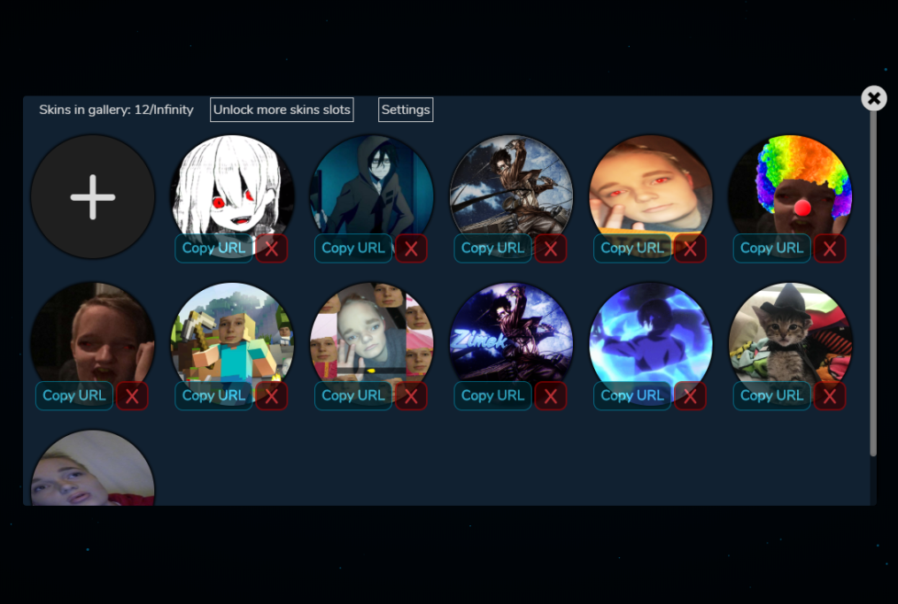
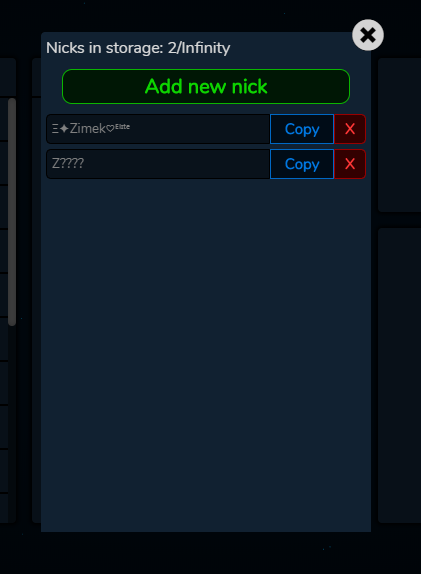
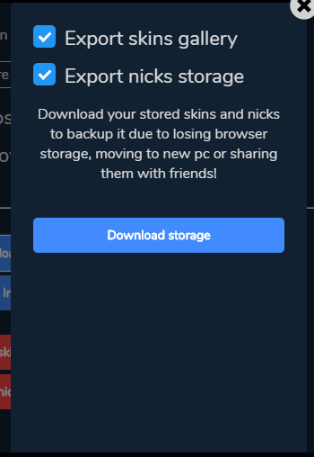
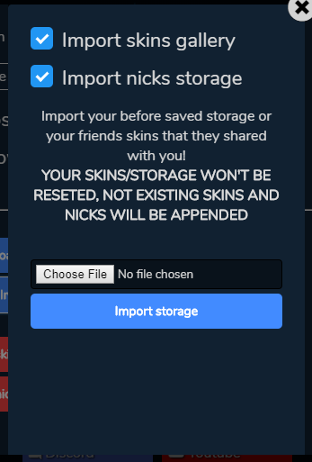
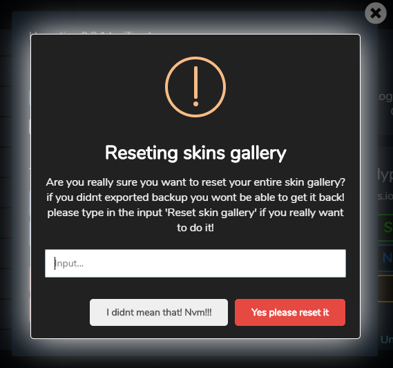
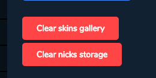

Skins gallery
Skins gallery allows you to store your skins to use them in any time (limit is 30) You can add skins, remove skins and copy their URLs. You can also add multiple skins at same time to save more time. By donating you can unlock unlimited skins storage
Skins gallery allows you to store your skins to use them in any time (limit is 30) You can add skins, remove skins and copy their URLs. You can also add multiple skins at same time to save more time. By donating you can unlock unlimited skins storage

Nicks storage
Nicks storage allows you to store your all fancy nicknames or also secret tags. Nicks storage doesnt include option to add multiple at same time because i find it pointless. Limit of nicks is 20 but by donating you can unlock unlimited
Nicks storage allows you to store your all fancy nicknames or also secret tags. Nicks storage doesnt include option to add multiple at same time because i find it pointless. Limit of nicks is 20 but by donating you can unlock unlimited


Export and Import
You can download your all skins and nicks on your deskop and import/load it later if you will lose it, or to share them with your friends
(Find buttons in settings)
You can download your all skins and nicks on your deskop and import/load it later if you will lose it, or to share them with your friends
(Find buttons in settings)


Reseting
You can reset your entire skins or nicks storage if you have too many useless, even if you click accidentally, theres captcha that you have to fill to reset it
(Find buttons in settings)
You can reset your entire skins or nicks storage if you have too many useless, even if you click accidentally, theres captcha that you have to fill to reset it
(Find buttons in settings)
To install Hypertion you need Tampermonkey extension or other userscript browser extension.
Install Hypertion
Install Hypertion